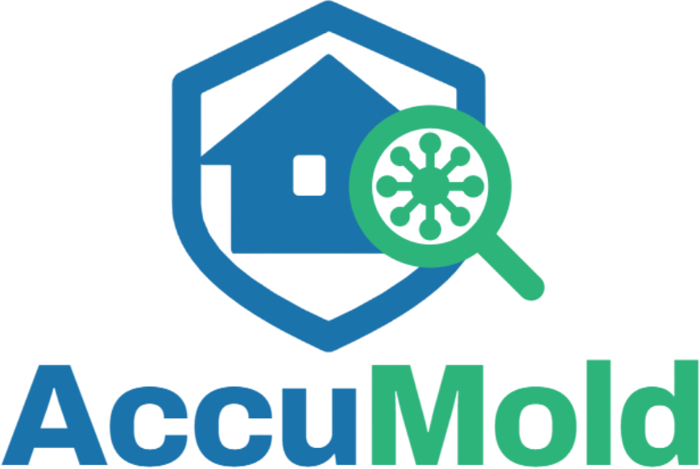

Speaker Kit
Materials for event organisers, podcast hosts and journalists working with Josh Kent and AccuMold. Take what you need.
The speaker
Founder and Inventor, AccuMold
Josh Kent is the founder and inventor of AccuMold, a free AI mold detector that turns a smartphone photo into an instant mold risk report. He has spent more than twenty years in mold, moisture and water damage, and is IAQA certified and BBB accredited.
Josh Kent has spent more than two decades finding water where it should not be: behind stucco, under floors, above ceilings, in buildings that looked perfectly fine from the street. In that time he watched the same thing happen again and again. People suspected a problem, could not afford to have it looked at properly, and waited. Waiting is exactly what mold needs.
He built AccuMold to close that gap. It is a free app that answers the first question a certified inspector would ask, on your own phone, in seconds. Josh is IAQA certified and BBB accredited.
Speaking topics
Why most people live with a mold problem for months before anyone looks at it, and what closing that gap is worth.
What happens to an industry when the first diagnostic step becomes free, instant and available to anyone with a phone.
Field stories from buildings that looked fine, and the patterns that give a moisture problem away long before anyone sees mold.
Building a detection tool people trust, what it can honestly tell you, and being clear about what it cannot.
Fact sheet
Downloads

Enquiries
Conferences, podcasts, press interviews and panels. Tell us the date, the audience and the format, and we will come back to you.